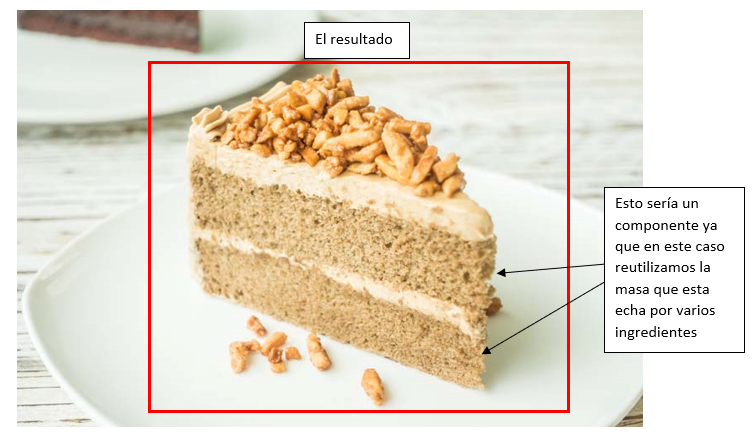
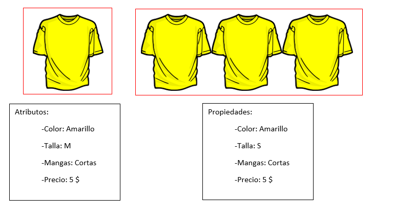

Un componente es un fragmento de código que se puede reutilizar y que puede contener multitud de elementos dentro del componente. Para hacernos una idea imaginemos una tarta, para hacer una tarta se necesitan unos ingredientes y algunos de esos ingredientes se usan para hacer otros como por ejemplo para la masa nos hace harina, huevos y agua y todos ellos juntos hacen la masa pues en este caso la masa seria nuestro componente, ya que esa masa la podremos usar para otras partes de la tarta. Así que un componente es un fragmento de código que podemos reutilizar como un recurso para no tener usar de forma separada todo de lo que esta echo el componente y darte unas propiedades y atributos diferentes al componente sin tener que modificarlo.
Las propiedades de un componente son las variables que se le dan a los elementos que están dentro del componente de tal forma que podamos decir las propiedades que tiene ese elemento como por ejemplo el tamaño o color.
Los atributos son como las propiedades, pero con la diferencia de que los atributos son para diferenciar un objeto de otro de forma individual mientras las propiendas lo hacen de forma global. Esto lo podemos ver cuándo por ejemplo le damos un identificar a un elemento y le damos unos atributos y a varios elementos los metemos en una clase para darles unas propiedades.
Un evento será cualquier cosa que implique una acción o que pueda a llegar a cambiar la apariencia o el comportamiento, por lo que un evento es la forma de comunicar un suceso para que se realice la acción asociada a dicho evento. Los eventos pueden ser llamados por diferentes acciones y entre ellas están: